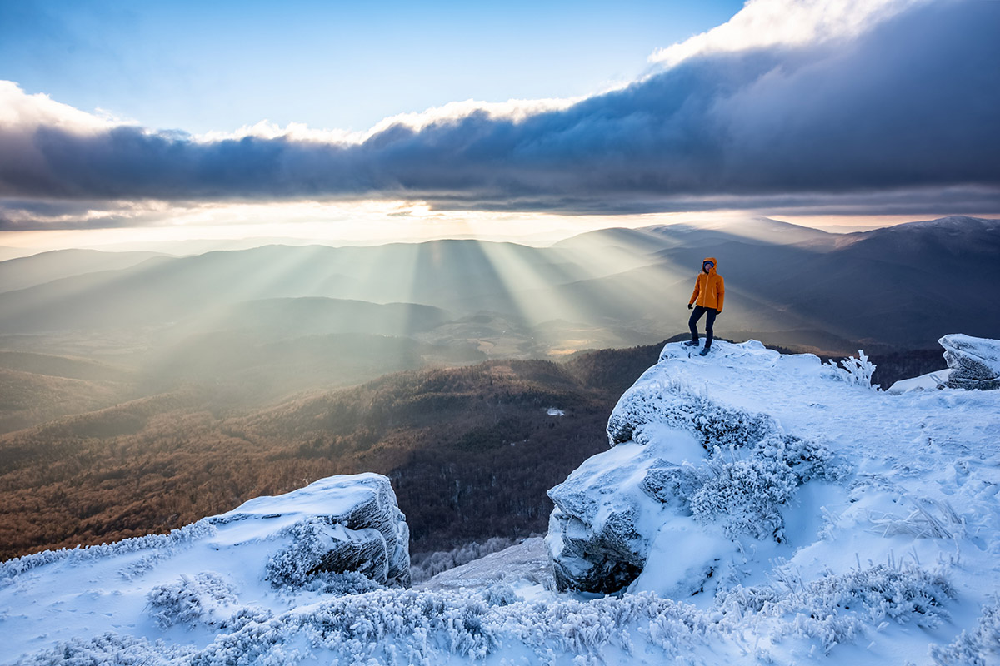
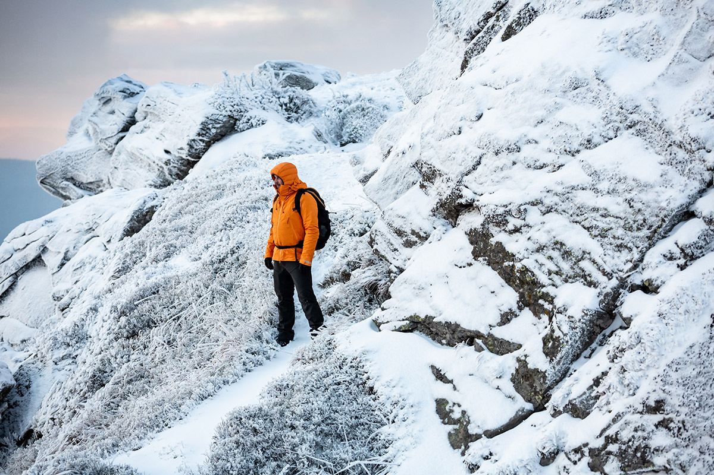
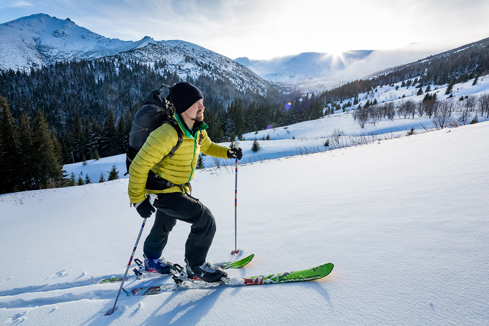

Велика зимова стаття
.jpg)
Отже, розпочнемо з того, що визначимо рамки в яких зібрано матеріали. Це здебільшого українські або ближні Карпати в той час коли вони знаходяться під сніговим покривом. Чому так?
Сніг змінює все.
Ваш темп, терморегуляцію, способи пересування, тактику підбору місць для ночівель, правильний розрахунок часу на маршрут з огляду на погоду та світловий день та чимало інших змінних, і їх повірте, вистачає. Враховуйте те, що постійний сніговий покрив в Карпатах це не тільки зима, а добрий відрізок часу з листопада по квітень, а на високогір’ї, і довший час. Філософія тепла: як якісно та ефективно утеплитися? Початківцям
Варто починати з малого.
Якщо ви ще не були у зимових горах, то найкращим тренажером буде невеликий одноденний маршрут до 10 кілометрів, та без виходу в зону високогір’я (зона відкритого хребта, без лісового покрову). Обов’язково перевірити погоду перед виходом на маршрут – бо повірте, повертатися назад, у завірюсі, без можливості руху по власним слідам, дуже сумнівне задоволення. Втім, якщо правильно обрати маршрут та подбати про всі необхідні дрібниці та гарну компанію – це чудова можливість провести час разом. Одноденна зимова мандрівка в гори: що брати з собою?Як одягнутися?
Існує безліч комбінацій, з досвідом кожен мандрівник підбирає свій ідеальний комплект. Якщо ж ви тільки починаєте – відштовхуйтеся від тришарової концепції одягу. Вона дуже проста та універсальна: перший шар (термобілизна) – виводить вологу на наступний, середній (утеплюючий) – зберігає тепло та виводить пару від тіла далі. І нарешті, останній третій шар – випускає пар назовні та захищає від вітру та атмосферних опадів.Забагато утеплення при активному русі, це такий же шлях до замерзання, як і замало утеплення.
Тришарова концепція одягу
Зимові дрібниці зовсім не дрібниці.
Якщо ви ще не ходили в зимові гори, в першу чергу, варто дізнатися про ті, речі, які досвідчені мандрівники за замовчуванням беруть з собою. Чимало з них не тільки про комфорт, але і про вашу здатність рухатися далі, затрачаючи при цьому меншу кількість енергії.- Врахуйте кілька простих правил:
- Світловий день – дуже короткий.
- Електроніка розряджається швидше – завжди майте запас енергії.
- Вітер не ваш друг – захищайте всі ділянки тіла, включно з обличчям та руками.
- Окуляри або лижна маска це те про що ви в жодному разі не пошкодуєте на маршруті.
- І завжди майте при собі м’ятні цукерки!
Досвід це завжди гулі.
Мабуть, найкращий спосіб зрозуміти, що не варто брати дуже тісне взуття з собою в зимовий похід, це подивитися, як виглядають ваші нігті після такого експерименту, однак ви можете піти інакшим шляхом та прочитати статтю Оксани Максимової про ті речі яких вона не знала починаючи мандрувати взимку. Зимовий похід в Карпати з виходом на високогір’я
Якщо ви вже в загальному уявляєте, що таке зимові Карпати та хочете спробувати себе у походах з ночівлею та виходами на високогір’я вам у нагоді стануть матеріали розраховані на більш досвідчених мандрівників.
В першу чергу ви маєте знати про елементи, які забезпечують безпеку руху в зимовий час та здобути навички користування ними. Кішки, льодоруби, трекінгові палиці та снігоступи це те, без чого ваш похід може стати дуже небезпечною затією. Якщо ви ще не маєте досвіду їх використання, то перш ніж починати снігові пригоди спробуйте себе на альпзборах або під керівництвом сертифікованих гідів, які зможуть пояснити та дати базовий досвід використання такого спорядження. Жоден текст не замінить вам практичних навичок, які здобуваються під час навчання на снігових схилах.
Зимове спорядження: кішки та льодоруби
Слід розуміти та зважувати ризики.
Найперший фактор небезпеки в горах це лавини. В першу чергу, вони становлять небезпеку для тих, хто займається фрірайдом, однак при збігу обставин можуть становити загрозу і для піших груп. В окремих місцях ведеться моніторинг сніго-лавинної ситуації з ним можна звіряти свої плани щодо організації мандрівки. Лавини в зимових горах
Де плануєте ночувати?
Існує два поширених способів ночівлі – колиби пастухів, які часто використовуються зимовими мандрівниками як справжній готель класу “люкс”, або ж хардкор варіант – в наметі. В обох випадках є свої особливості про які можна прочитати в тематичних статтях від Надії Чепелевської. Колиби в Карпатах Зимова ночівля в наметі
Як плануєте рухатися?
Традиційний літній спосіб пересування стає дуже енергозатратним взимку. Той кому доводилося “тропити” багато кілометрів підряд, погодиться, що альтернативні варіанти варті уваги. Про що йдеться? Існує два інші способи пересування в зимових горах – снігоступи та скітур лижі. Перші підійдуть тим хто любить рухатися поволі, але надійно, другі оцінять ті хто має гарну техніку катання та любить швидкісні спуски. 
Багато речей залежить від змінних.
Якщо влітку лише до невеликої кількості вершин в Карпатах можна застосувати термін “сходження”, то взимку ситуація змінюється з точністю до навпаки, в залежності від умов, навіть, відносно нескладні гори можуть бути доволі екстремальними для підйому.Якщо вам цікаві конкретні локації для мандрівки можете звернути увагу на ці статті: